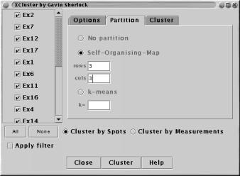

This plugin provides an interface to the XCluster software by Gavin Sherlock, for details of the parameters see the XCluster website.

Clustering can be done on either Spots (i.e. finding genes with similar profiles ) or Measurements (i.e. finding experiments or organisms with similar profiles).
All Measurements is displayed in a list. Use `shift-click' or `ctrl-click' to select one or more Measurements to be passed to the clustering algorithm.
Apply filter restricts the clustering to the Spots which pass through the current Filter(s).
The clustering process takes place in a separate thread. You can continue to use other features of maxdView whilst the clustering is under way, but take care not to load new data points until the clustering has finshed.
The controls and parameters are organised in three groups:
This panel is used to specify where the XCluster package has been installed and where temporary files should be stored.
The "Location of Cluster program" field should contain the full path to the `cluster' binary, e.g. /usr/local/apps/xcluster/cluster.
The "Directory for temporary files" field can optionally give the path of a directory in which files can be stored. Tempoprary files are used to communicate data from maxdView to `XCluster'. If this field is left blank then the directory where maxdView is installed will be used.
The "Delete after use" option refers to the temporary files and should normally be switched on (unless you wish to manually inspect the output of the `XCluster' for some reason).
This panel is used to select which (if any) of two possible partitioning schemes to use whilst clustering.
"No partition" results in normal hierarchical clustering.
"K-means" attempts to group the data into a fixed number of categories, each of which is organised by a separate hierarchical clustering.
"Self-Organising-Map" attempts to group the data into categories as with k-means. Here the categories are further organised into a grid arranged by their similarity with one another.
This panel contains options used by XCluster when determining how similar one Spot or Measurement is to another one. The options are explained fully in the documentation that accompanies 'XCluster'.
"Pearson corelation"
"Euclidean distance"
"Centered distance"
"Log transform data"